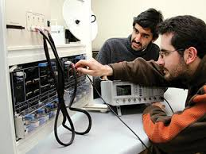
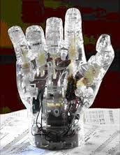

El Ingeniero en Sistemas de la Universidad Estatal Peninsula de Santa Elena, es un profesional capaz de administrar, desarrollar y liderar el desarrollo de Soluciones Informaticas, que en su nivel mas alto de complejidad incluyen apoyo en la toma de decisiones, tanto para organizaciones productivas como de servicio, con el proposito de obtener un incremento de eficiencia y eficacia en el funcionamiento global de las organizaciones

Aplicar conocimientos de matematicas, la ciencia y la ingenieria Capacidad de disenar un sistema, componente o proceso para satisfacer las necesidades deseadas dentro de restricciones realistas tales como el medio ambiente, economico, sociales, politicas, eticas.

La carrera de Ingenieria en Robotica responde a las necesidades del pais de contar con profesionistas que integren conocimientos de las areas de Computacion, Electronica, Diseno Digital y Robotica.